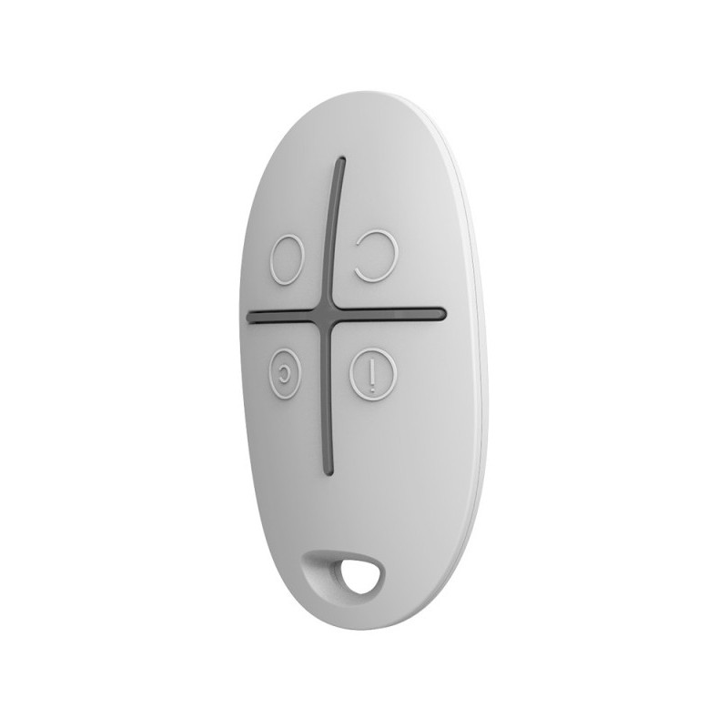
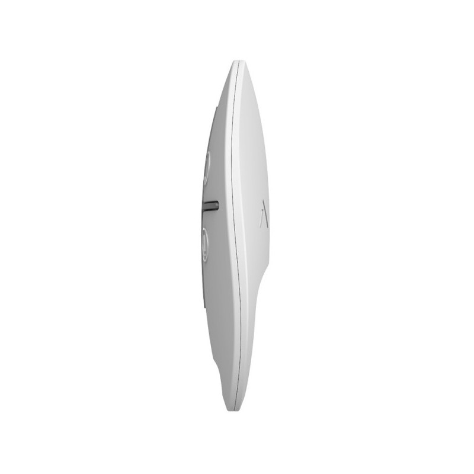
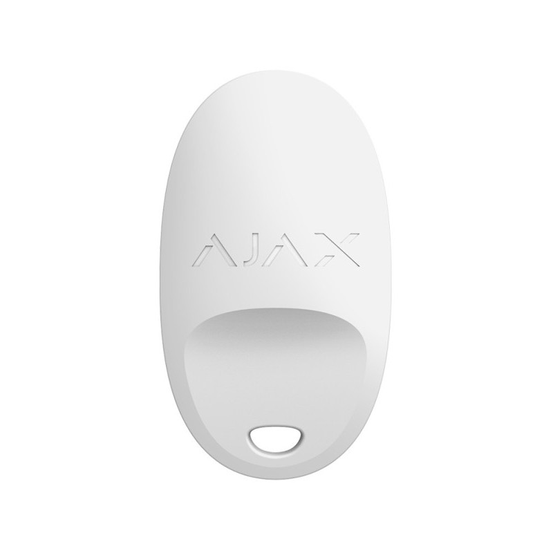

Брелок з тривожною кнопкою і керуванням режимами охорони Ajax SpaceControl White




❮
❯
Бездротовий брелок Ajax SpaceControl Jeweller з тривожною кнопкою і керуванням режимами охорони призначений для зручного управління системою безпеки Ajax без використання смартфона. Компактний пристрій з 4 кнопками дозволяє ставити систему на охорону, знімати з охорони, вмикати нічний режим та викликати тривогу. Брелок має дальність зв'язку до 1300 метрів, захист від випадкових натискань, можливість призначення конкретному користувачеві та керування охороною окремих груп приміщень.
Основні характеристики:
Основні характеристики:
- 4 функціональні кнопки для повного керування системою
- Кнопка постановки системи під охорону
- Кнопка зняття системи з охорони
- Кнопка ввімкнення нічного режиму
- Тривожна кнопка для екстрених ситуацій
- Дальність зв'язку з хабом до 1300 м на відкритому просторі
- Захист від випадкових натискань (тривале або подвійне натискання)
- Можливість призначення конкретному користувачеві
- Керування охороною окремих груп приміщень
- Компактний розмір: 65 × 37 × 10 мм
- Легкий: 12,7-13 г
- Автономна робота до 5 років від однієї батареї CR2032
- Два кольори на вибір: чорний, білий
- Кнопка встановлення системи під охорону (повна охорона)
- Кнопка зняття системи з охорони (деактивація всіх режимів)
- Кнопка ввімкнення нічного режиму (часткова охорона, периметр)
- Тривожна кнопка (сигнал SOS, виклик допомоги)
- Інтуїтивно зрозумілі символи на кнопках
- Тактильний відгук при натисканні
- Миттєве виконання команди після натискання
- Виклик екстреної допомоги одним натисканням
- Система надсилає тривогу на пульт охоронної компанії (ПЦС)
- Миттєве сповіщення всім користувачам системи
- Активація всіх підключених сирен
- Корисно при загрозі здоров'ю, нападі, пограбуванні
- Можна використовувати вдома та на вулиці (в межах дальності зв'язку)
- Ідеально для літніх людей, дітей, людей з обмеженими можливостями
- Часткова охорона періметра (вікна, двері) при перебуванні вдома
- Можливість вільно пересуватися всередині приміщення
- Датчики руху всередині будинку не активні
- Датчики відчинення на вікнах і дверях активні
- Спокійний сон під захистом системи
- Миттєва тривога при спробі проникнення ззовні
- Швидке ввімкнення одним натисканням перед сном
- Брелок можна призначити конкретному користувачеві системи
- Події брелока надходять у застосунки Ajax від імені цього користувача
- Брелок має такі самі права на керування, що й користувач
- Можливість відстеження хто саме керував системою
- Історія дій зберігається у застосунку
- Легке управління правами доступу через застосунок
- Можна видалити або заблокувати брелок дистанційно
- Користувач може вибрати групу приміщень, охороною якої керує брелок
- Корисно для багатокімнатних або багатоповерхових об'єктів
- Можна охороняти тільки певну частину будинку або офісу
- Гнучке керування великими об'єктами
- Налаштування груп через застосунок Ajax
- Один брелок може керувати однією групою
- Функція доступна для брелоків з версією прошивки 5.54.1.0 або вище
- Брелоки, виготовлені після 19 березня 2020 року
- Режим тривалого натискання: потрібно утримувати кнопку 1-2 секунди
- Режим подвійного натискання: потрібно натиснути кнопку двічі швидко
- Налаштування режиму через застосунок Ajax
- Запобігає випадковій активації/деактивації системи в кишені або сумці
- Особливо важливо для тривожної кнопки
- Пропрієтарна бездротова технологія Ajax для передавання команд, тривог і подій
- Дальність зв'язку: до 1300 м (між пристроєм і хабом або ретранслятором за відсутності перешкод)
- Двосторонній зв'язок з хабом
- Блокове шифрування з плаваючим ключем
- Передовий захист від саботажу
- Миттєві сповіщення про події
- Дистанційне керування та налаштування в застосунках Ajax
- Радіочастотний гопінг для запобігання радіозавадам і глушінню
- Діапазони радіочастот: 866,0–866,5 МГц, 868,0–868,6 МГц, 868,7–869,2 МГц, 905,0–926,5 МГц, 915,85–926,5 МГц, 921,0–922,0 МГц (залежить від регіону)
- Максимальна ефективна випромінювана потужність (ERP): до 20 мВт
- Автоматичне регулювання потужності для зниження енергоспоживання та радіозавад
- Модуляція радіосигналу: GFSK
- Батарея: 1 × CR2032 тип C (попередньо встановлена)
- Розрахунковий строк роботи від батареї: до 5 років
- Номінальна робоча напруга: 3 В⎓
- Споживання струму в стані спокою: 0,7 мкА
- Максимальний струм споживання: 26 мА
- Повна ємність батареї: 225 мА·год
- Виробники батареї: Renata, Panasonic
- Легка заміна батареї без інструментів
- Сповіщення про низький заряд батареї у застосунку
- Розміри: 65 × 37 × 10 мм
- Вага білого пристрою: 13 г
- Вага чорного пристрою: 12,7 г
- Діапазон робочих температур: від −10°C до +40°C
- Допустима вологість: до 95%
- Клас захисту: IP50 (захист від пилу), IK04 (захист від ударів)
- Кольори: чорний, білий
- Компактний дизайн для носіння на ключах
- Міцний пластиковий корпус
- Носіть брелок на ключах для постійного доступу
- Тримайте поблизу при перебуванні вдома
- Використовуйте для швидкого керування без смартфона
- Видайте брелоки членам сім'ї, співробітникам
- Носіть окремо від інших ключів для запобігання пошкодженням
- Уникайте впливу води (хоча допускається вологість до 95%)
- Не залишайте під прямими сонячними променями
- Перевіряйте заряд батареї через застосунок
- Житлові приміщення (квартири, будинки)
- Офіси та комерційні приміщення
- Магазини та торгові точки
- Складські приміщення
- Гаражі та паркінги
- Дачі та заміські будинки
- Для літніх людей (тривожна кнопка)
- Для дітей (безпека та контроль)
- Для працівників з доступом до об'єкта
- Будь-які об'єкти з системою Ajax
- ✅ Висока дальність зв'язку — до 1300 м
- ✅ 4 функціональні кнопки для повного керування
- ✅ Тривожна кнопка SOS для екстрених ситуацій
- ✅ Нічний режим охорони для спокійного сну
- ✅ Захист від випадкових натискань
- ✅ Можливість призначення користувачеві
- ✅ Керування групами приміщень
- ✅ Компактний і легкий (12,7-13 г)
- ✅ До 5 років автономної роботи
- ✅ Швидке керування без смартфона
- ✅ Два кольори на вибір
- ✅ Захист від вологості до 95%
- ✅ Захист від ударів IK04
- Додавання брелока до системи
- Призначення брелока конкретному користувачеві
- Налаштування режиму захисту від випадкових натискань (тривале/подвійне)
- Вибір групи приміщень для керування
- Моніторинг заряду батареї
- Перевірка рівня сигналу Jeweller
- Перегляд історії використання брелока
- Блокування або видалення брелока дистанційно
- Тестування роботи брелока
- Швидка постановка/зняття з охорони при виході/поверненні додому
- Ввімкнення нічного режиму перед сном одним натисканням
- Виклик екстреної допомоги при загрозі (напад, пограбування, проблеми зі здоров'ям)
- Керування системою для літніх членів сім'ї (простіше ніж смартфон)
- Надання доступу працівникам без видачі смартфона
- Тривожна кнопка для самотніх літніх людей
- Дітям для виклику батьків у разі небезпеки
- Керування охороною окремих зон великого об'єкта
- Резервний спосіб керування при розрядженому телефоні
- SpaceControl має 4 кнопки (Button — тільки 1)
- Повне керування системою (постановка/зняття з охорони, нічний режим)
- Можливість керування групами
- Можливість призначення користувачеві
- Більші розміри (65×37×10 мм проти 42×42×13 мм)
- Менша дальність зв'язку (1300 м проти 1300 м — однаково)
- Вища вартість завдяки додатковому функціоналу
- Повне керування системою без смартфона
- Зручність для всіх членів сім'ї
- Тривожна кнопка для екстрених ситуацій
- Нічний режим для комфортного сну
- Компактний розмір для носіння на ключах
- Тривалий термін роботи від батареї
- Захист від випадкових натискань
- Простота використання
- Всі члени сім'ї з доступом до будинку
- Літні люди, яким складно користуватися смартфоном
- Діти для безпеки та можливості викликати допомогу
- Працівники офісів, магазинів з доступом до приміщення
- Люди з обмеженими можливостями
- Власники великих будинків з декількома зонами охорони
- Всі, хто цінує швидкість і зручність
- Всі дії брелока записуються в історію
- Видно хто і коли поставив/зняв систему з охорони
- Фіксація використання тривожної кнопки
- Ввімкнення/вимкнення нічного режиму
- Контроль доступу членів сім'ї або працівників
- Можливість аналізу використання системи
- Ajax SpaceControl Jeweller
- Батарея CR2032 (попередньо встановлена)
- Коротка інструкція
- Працює з усіма хабами Ajax (Hub, Hub 2, Hub Plus, Hub Hybrid)
- Підтримка ретрансляторів сигналу (ReX, ReX 2) для збільшення дальності
- Інтеграція з застосунками Ajax (iOS, Android, macOS, Windows)
- Підключення до пультів централізованого спостереження (ПЦС)
- Сумісність з усіма пристроями та датчиками Ajax
- Підтримка сценаріїв автоматизації
- Блокове шифрування з плаваючим ключем
- Захист від перехоплення та підміни команд
- Унікальний ідентифікатор для кожного брелока
- Радіочастотний гопінг проти глушіння
- Автентифікація пристрою при кожній команді
- Неможливість клонування або копіювання
- Миттєве передавання команди після натискання кнопки
- Час спрацювання: менше 1 секунди
- Двосторонній зв'язок підтверджує виконання команди
- Сирени та датчики реагують одразу
- Критично важливо для тривожної кнопки
- Рекомендується мати по брелоку для кожного дорослого члена сім'ї
- Призначте кожен брелок відповідному користувачеві для контролю доступу
- Налаштуйте захист від випадкових натискань для тривожної кнопки
- Періодично перевіряйте заряд батареї через застосунок
- Тримайте запасну батарею CR2032 вдома
- Поясніть всім членам сім'ї призначення кожної кнопки
970.00 грн